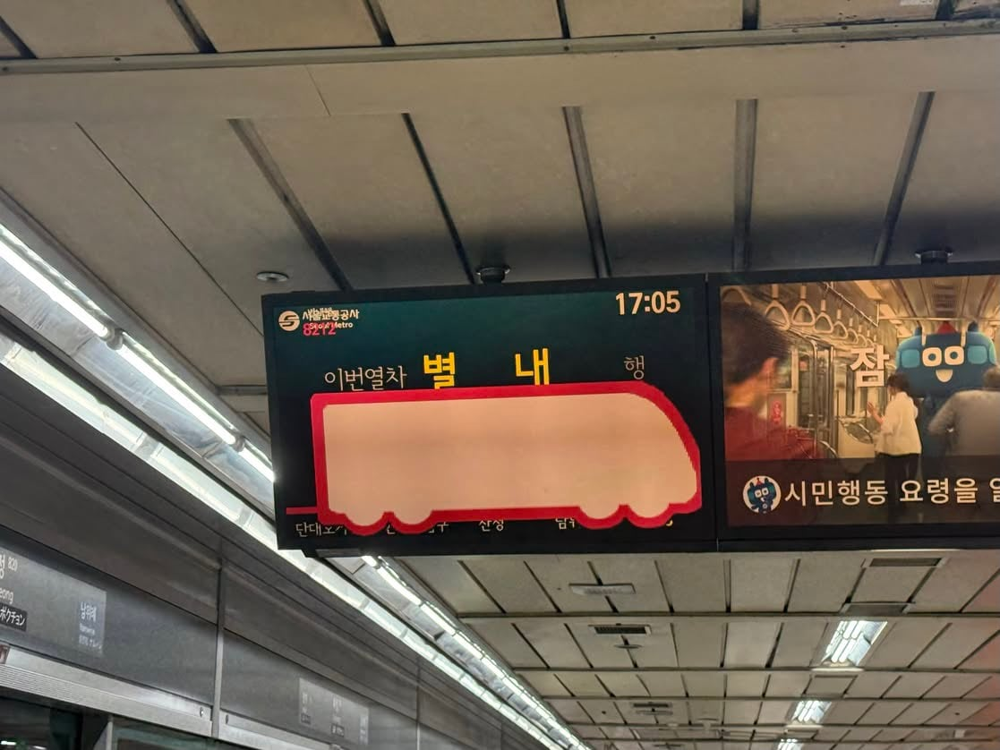

별내행 거대한 열차가 들어오고 있습니다.🚈
댓글
나폴리탄괴담같네
글쓴이가 모자이크 처리한건줄알았네 ㅋㅋ
멀리서부터 들려오는 커다란 굉음...
기차가 터널 뚫는 콘 없나
이상현상을 발견하면 뒤돌아 나가세요
그렇게 큰 건 안들어가
얼마나 태우려는거야
와 가슴 4개 달림
크.. 크고 아름다워요...
응기잇!!!
그렇게 큰 건 못들어와!
왕크니까 왕빠르겠네
복정역게이야...

나폴리탄괴담같네
글쓴이가 모자이크 처리한건줄알았네 ㅋㅋ
멀리서부터 들려오는 커다란 굉음...
기차가 터널 뚫는 콘 없나
이상현상을 발견하면 뒤돌아 나가세요
그렇게 큰 건 안들어가
얼마나 태우려는거야
와 가슴 4개 달림
크.. 크고 아름다워요...
응기잇!!!
그렇게 큰 건 못들어와!
왕크니까 왕빠르겠네
복정역게이야...
대충기차가터널확장중인콘